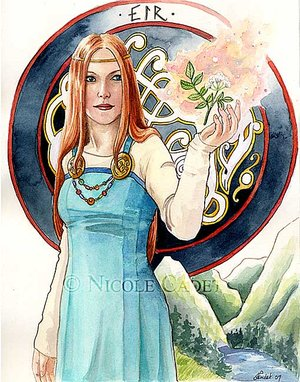
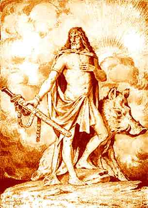
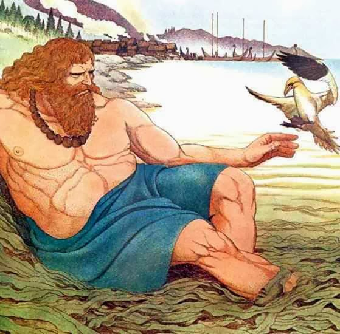

Clique nas imagens para saber mais
Os Æsir são:
- Balder
Deus da sabedoria
- Bragi
Deus da poesia
- Dag
Deus do dia
- Eir
Deusa famosa por sua habilidade de cura
 - Forseti
Deus da meditação
- Frigga
Deusa do amor e da união
- Hœnir
Um dos primeiros deuses, irmão de Odin

- Hoder
Deus cego, irmão de balder
- Iduna
Deusa guardiã do pomar sagrado

- Loki
Deus do fogo e da trapaça, irmão adotivo de Odin
- Magni e Modi
Filhos de Thor, representam a Força e a Coragem
- Mímir
Deus gigante, o mais sábio dentre todos os seres
- Odin
Deus da guerra e da morte, considerado o pai de todos

- Sif
Deusa da habilidade em combate, esposa de Thor
- Sigel
Deusa do sol
- Thor
Filho primogênito de Odin, deus do trovão
- Thrud
Deusa asynjor, filha de Thor
- Tyr
Deus do combate e do céu, um dos grandes deuses de asgard
- Uller
Deus da justiça e do julgamento
- Vali
Deus membro dos Aesir, filho de Odin
- Vidar
Deus associado, muito forte, sendo derrotado somente por Thor
Os Vanir são:
- Aegir
Governa os mares, ao lado de sua esposa, Ran
- Freyya
Deusa da fertilidade e do amor
- Freyr
Irmão de Freyya, deus do tempo e da prosperidade
 - Gefjun
Deusa da agricultura
- Gerda
Esposa de Frey, deusa das almas perdidas
- Gullveig
Deusa bruxa dos vanir
- Heimdall
Deus guardião da Bifrost, a ponte do arco íris de asgard
- Kvasir
Deus criado das mistura da saliva de todos os deuses
- Njord
Pai de Freyr e Freyya, deus dos ventos
 - Ran
Governa os mares, ao lado de Aegir, seu esposo
- Skadi
Deusa nórdica do inverno

- Urd
Deusa nórdica do passado